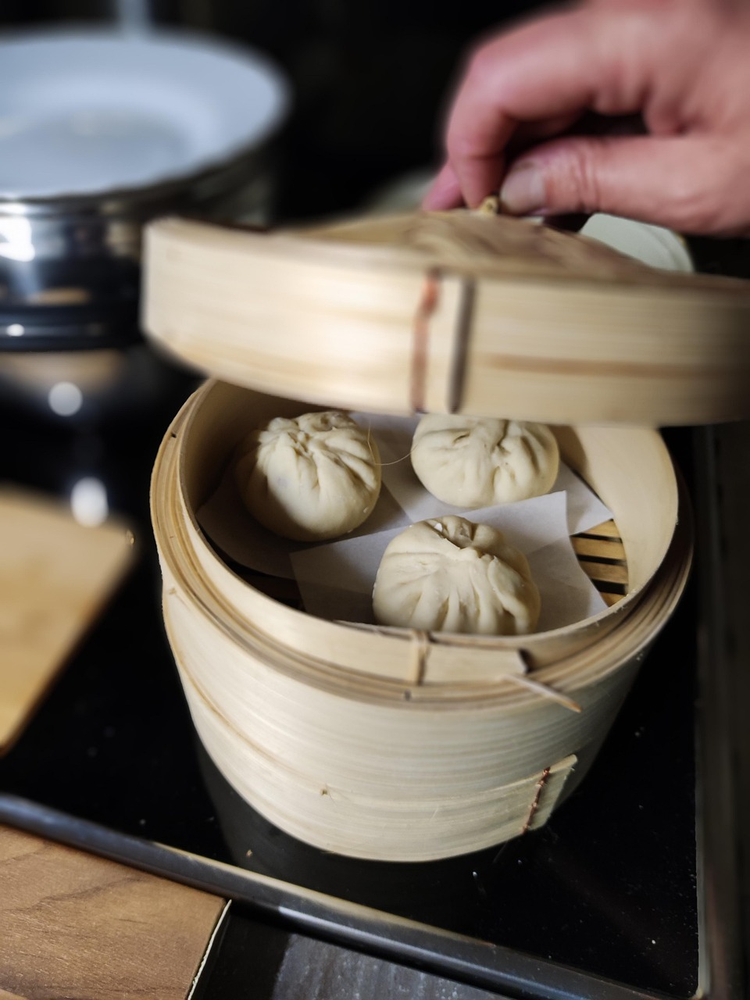

Baozi are tasty Chinese dumplings,
and making them is basically an art.
They have different stuffings, from vegetarian to seafood.
Ingredients
- water
- oil(half the amount of water by weight)
- 2 teaspoons dried yeast
- Pork meat
Make the dough.
Combine the water and oil with all-purpose flour and add dried yeast.
Put the dough in the fridge for 30 minutes.
Marinate Pork meat with 2 table spoons of dark soy souce,
one table spoon of light soy sauce,
and anise star.
Then make Circles of dough and put the pork meat on the circles
Fold the circles to close them
and then steam the dumplings.
After approximately 40 minutes after boiling
the dumplings should be ready.
For the main page click here